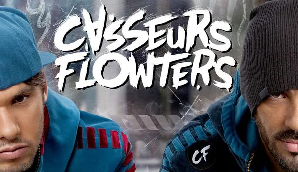

Tu peux (pas) le faire
« Si facile » est une musique tirée du film « Comment c’est loin » du duo formé par Orelsan et Gringe, les Casseurs Flowters
Affiche de “Comment c’est loin” de Orelsan
Deux points de vue, un seul ressenti
Dans cette chanson, Orelsan et Gringe parlent à un de leurs amis, qui leur tourne le dos en se lançant dans un projet irréalisable de leur point de vue, devenir chanteur, et ils le descendent en lui disant que ce n’est pas possible car il n’en a pas les capacités. On peut aussi avoir l’impression qu’ils nous racontent ce qu’on a pu leur dire à eux. On ne peut pas réellement savoir s’ils parlent à quelqu’un ou si quelqu’un leur parle. Cette double lecture est très intéressante car elle nous montre un entourage très peu confiant à l'idée qu’un proche se rate dans sa vie professionnelle, mais aussi comment deux « amis » vous font comprendre avec des mots très crus comment vous ne pourriez, malgré tous vos efforts, réaliser votre rêve de devenir chanteur / rappeur.

Orelsan et Gringe à l’époque des Casseurs Flowters
Si c’était si facile …
Cela me fait beaucoup penser à Po qui devient le « guerrier dragon » par hasard au début du film, mais son entourage ne fait que de lui dire qu’il n’en est pas capable et que quelqu’un d’autre aurait dû être pris à sa place. La partie qui décrit le mieux le lien entre ces deux œuvres est sûrement le refrain « Si c’était si facile, tout le monde le ferait, qui tu serais pour réussir ou tous les autres ont échoué, oublies tes rêves prétentieux, redescend sur Terre ou tu n’en reviendras jamais », Po n’était pas, selon ses fréquentations, la personne fait pour le rôle du guerrier dragon.
J’ai choisi cette chanson premièrement parce que c’est une musique que j’apprécie beaucoup qui provient d’un film que j’aime tout autant, mais aussi et surtout parce que je trouve qu’elle s’associe presque parfaitement à Po, le personnage principal de Kung-fu Panda.
 EN
EN